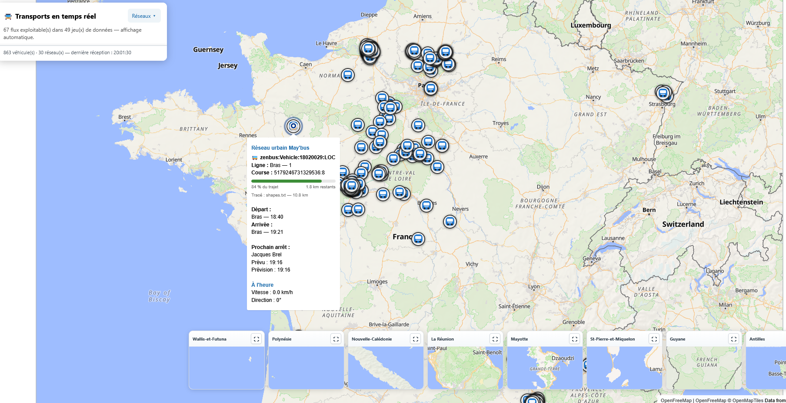

Projet personnel · Octobre 2026
Projet GTFS-RT
Une carte de France pour visualiser les bus en temps réel et, lorsque les horaires théoriques sont disponibles, estimer leur avance ou leur retard. Le tout dans une page HTML unique.
Voir le projet sur GitHub
Une occasion de poursuivre les essais
ChatGPT me narguait depuis plusieurs semaines avec son offre d’essai gratuite d’un mois. Je terminais mes tests avec l’IA en local et je pensais plutôt partir sur Claude, mais je me suis dit : pourquoi pas ?
J’ai donc lancé un premier projet avec ChatGPT 6 Sol. Comme je travaille dans les transports, j’ai choisi une idée simple : une carte de France sur laquelle voir les bus en temps réel.
Une page HTML, une heure de réalisation
La contrainte était claire : le projet devait tenir dans une seule page HTML, utilisable avec une connexion Internet, sans autre installation nécessaire.
J’avais une idée très précise du résultat que je souhaitais obtenir. Le projet n’a donc duré qu’une heure.
Récupérer les données ouvertes
La recherche des données se fait en priorité sur data.gouv.fr. J’ai aussi ajouté une liste de quelques sites qui mettent leurs flux GTFS à disposition.
Les données retenues sont libres d’accès. J’ai toutefois préféré écarter les flux dont la configuration CORS empêchait la lecture directe depuis le navigateur, pour conserver la simplicité de la page unique.
Du temps réel à la ponctualité
La page lit en priorité les flux GTFS-RT et affiche les positions disponibles sur une carte fondée sur les données OpenStreetMap.
Lorsque les données GTFS correspondantes sont également disponibles, elles permettent de rapprocher les informations en temps réel des horaires théoriques et d’en déduire une avance ou un retard.
Le résultat
Une carte qui rassemble les véhicules des réseaux dont les flux sont exploitables, avec le détail des courses et les informations disponibles sur leur progression et leur ponctualité.
La couverture dépend donc des données accessibles : l’objectif était de visualiser simplement les flux disponibles, sans chercher à intégrer les sources bloquées par les restrictions CORS.